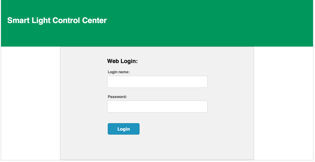

The Control Center for Intelligent Lighting System
Everything goes smart now, so why not the light? Smart Lighitng project will serve us ranging from Visible Light Communication(VLC) to the intelligent lighting system as we can imagine with the light!
Introduction
Hereby I am proud to introduce the part of my project for the Master's degree with Prof. Thomas Little who is the director in Smart Lighting engineering center in Boston University. It is mainly about a Cloud-based web contorl center that is implemented by J2EE for the backend and HTML, CSS, Javascript for the frontend to serve the intelligent lighting system.The below is the basic idea and design.
This web application is now running at the tomcat7 container on my personal AWS cloud server in which I put this tomcat7 behind the nginx web proxy server for security issue. Need to mention that this version of control center does Not connect to the lighting hardware, so it is just for demo and pleasure, but there are still the interaces for the hardwares for the later use.
Teleport
Teleport to the Control Center:
User Manual
Just give some hints about what the app looks like and how to use, or you could check it by yourself at portal above!
-
Login page
Chrome and Safari are recommended since the web application is developed using WebKit browsers. If you use Firefox or IE, the display may be distorted.
 -
Account
Menu contains 3 items: Home, Logout and Account. Home is used for going back to Home. Logout is logout as it shows. Account is for users to change their password.

-
Light configuration page
Users can change the current light parameters and decide whether save it as presets. “Apply” button let you apply the setting to only one light while “Apply for all” is used for all lights. Note that clicking “Apply” or “Apply to all” will not change the colors of the light, the user must click “Apply Configuration” to send the configurations to the lights. If user feels comfortable with current setting or certain setting, they could save it as a preset for later use. Sliders and the light bubble nearby are easy for users to control the color of the light if they are not familiar with the RGBY combination.
-
Energy report
Energy consumption is one of our main concerns and users could check the Energy usage for current light setting in this page. There are energy usage of Today Month and Total that depend on the data in the database. You can only view the energy report.
-
Timer setting
- Sleep Timer: When users trigger Dynamic mode, a sleep timer need to be set If the user doesn’t trip either motion sensor, the system has light1 on a delayed timer that will shut the light off automatically after the allotted amount of time.
- Wake up time: Users could set a designed time (00:00-23:59 hours) to wake up the lights. For Example, 6:00 is a proper time to wake up the lights.
- Alert time: When the current time hits the designed time (00:00-23:59 hours), the green lights will flicker two times as an alert to users.
- Dynamic Light Settings: In this section, users could choose the Preset mode: Fixed and Natural light. Fixed means that preset will stay the same as the users want while if users select the Natural light, the lights will change according to the time, which is accordant to the Natural light.
Home page
In this page, user will see a menu on the header, 4 icons in the body and a dynamic mode switcher on the footer. As description along each icon, users get a hint about what each one is used for. Moreover, Home page is a center for users to choose which service they want to use. When you are confused about what to do, click Home button and go back to Home page.
Post Script
Mentioned above that this system needs authentication, but I wouldn't like to give everyone permission to it because of some security issues. However If you are interested in playing around this web app, I will give you a temporary username and password for your pleasure for a while.
Click here to email me! or just leave comments below!Other Posts
- Sep 2014 » How to Build Your Own Website by AWS and Nginx
- Sep 2014 » Motion Curves Detection by TinyOS/motes
- Sep 2014 » A Color Outlier Algorithm Based on the Markov Model
- July 2014 » Cyber Security Learning Schedule for the very Beginner
comments powered by Disqus